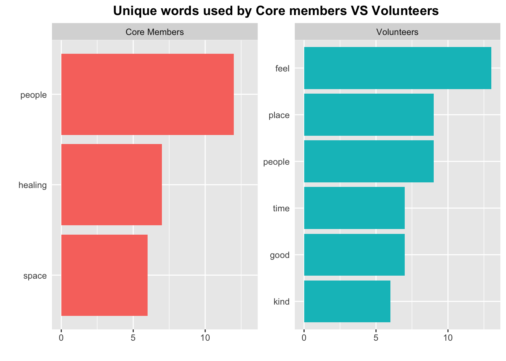
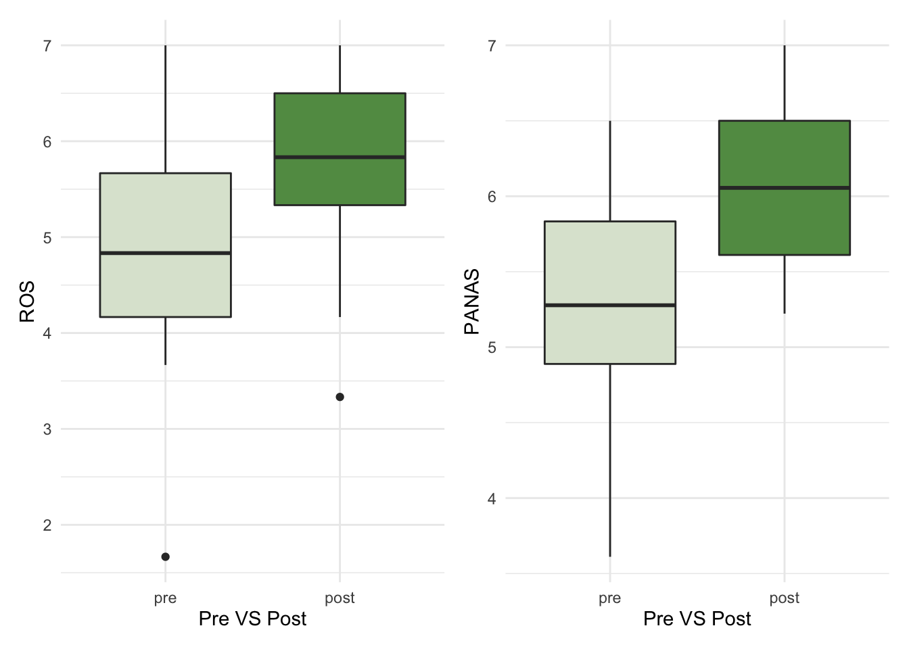
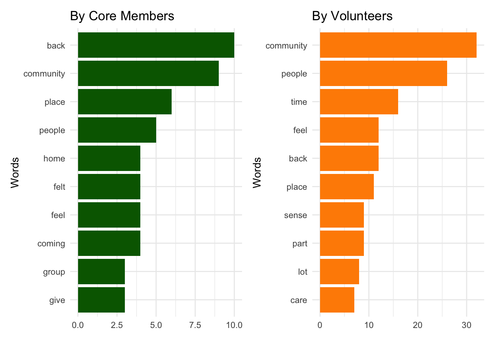
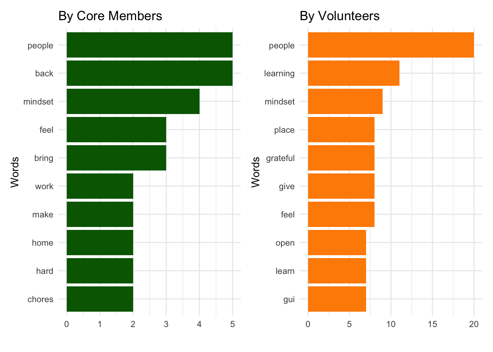
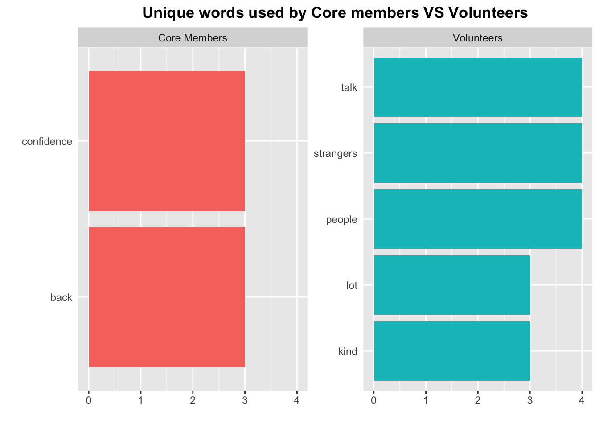
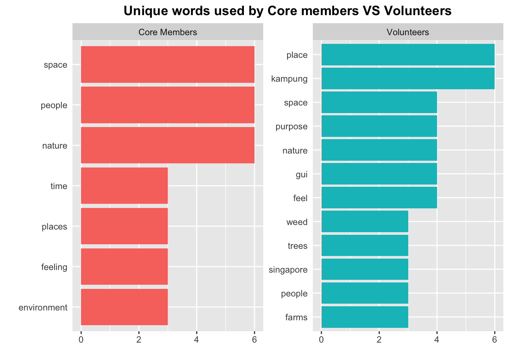

Chapter 5 Focus Group Discussion Text Analysis
5.1 Core Members VS Volunteers: Benefits
5.1.1 Restoration
5.1.1.1 Most Frequently Used Words

5.1.1.2 Frequency–inverse Document Frequency
This is to find words that are common within the messages of one author but uncommon in the rest of the messages.

5.1.1.3 Text Similarity
Cosine Similarity is a metric used to determine how similar the documents are irrespective of their size.
Cosine Similarity ranges from 0 to 1: 1 being the perfect match and 0 being totally different.
Overall Cosine Similarity between Core members and Volunteers
## textstat_simil object; method = "cosine"
## text1 text2
## text1 1.000 0.586
## text2 0.586 1.000- Cosine Similarity between Core members (text 1) and 5 focus group sessions with volunteers (text 2 to 6)
## text1 text2 text3 text4 text5 text6
## text1 1.0000000 0.3613546 0.3337387 0.5265683 0.3399109 0.3029946
## text2 0.3613546 1.0000000 0.1357814 0.3253947 0.1760760 0.1803389
## text3 0.3337387 0.1357814 1.0000000 0.3764931 0.3602114 0.2898755
## text4 0.5265683 0.3253947 0.3764931 1.0000000 0.3737803 0.3105850
## text5 0.3399109 0.1760760 0.3602114 0.3737803 1.0000000 0.2600093
## text6 0.3029946 0.1803389 0.2898755 0.3105850 0.2600093 1.0000000
5.1.2 Nature Connection
5.1.2.1 Most Frequently Used Words

5.1.2.2 Frequency–inverse Document Frequency
This is to find words that are common within the messages of one author but uncommon in the rest of the messages.

5.1.2.3 Text Similarity
- Overall Cosine Similarity between Core members and Volunteers
## textstat_simil object; method = "cosine"
## text1 text2
## text1 1.000 0.629
## text2 0.629 1.000- Cosine Similarity between Core members (text 1) and 5 focus group sessions with volunteers (text 2 to 6)

5.1.3 Sense of Community
5.1.3.1 Most Frequently Used Words

5.1.3.2 Frequency–inverse Document Frequency
This is to find words that are common within the messages of one author but uncommon in the rest of the messages.

5.1.3.3 Text Similarity
- Overall Cosine Similarity between Core members and Volunteers
## textstat_simil object; method = "cosine"
## text1 text2
## text1 1.000 0.696
## text2 0.696 1.000- Cosine Similarity between Core members (text 1) and 5 focus group sessions with volunteers (text 2 to 6)

5.1.4 Empowerment
5.1.4.1 Most Frequently Used Words

5.1.4.2 Frequency–inverse Document Frequency
This is to find words that are common within the messages of one author but uncommon in the rest of the messages.

5.1.4.3 Text Similarity
- Overall Cosine Similarity between Core members and Volunteers
## textstat_simil object; method = "cosine"
## text1 text2
## text1 1.000 0.271
## text2 0.271 1.000- Cosine Similarity between Core members (text 1) and 5 focus group sessions with volunteers (text 2 to 6)

5.1.5 Environmental Awareness
5.1.5.1 Most Frequently Used Words

5.1.5.2 Frequency–inverse Document Frequency
This is to find words that are common within the messages of one author but uncommon in the rest of the messages.

5.1.5.3 Text Similarity
- Overall Cosine Similarity between Core members and Volunteers
## textstat_simil object; method = "cosine"
## text1 text2
## text1 1.000 0.151
## text2 0.151 1.000- Cosine Similarity between Core members (text 1) and 5 focus group sessions with volunteers (text 2 to 6)

5.1.6 Hands-on Experiences
5.1.6.1 Most Frequently Used Words

5.1.6.2 Frequency–inverse Document Frequency
This is to find words that are common within the messages of one author but uncommon in the rest of the messages.

5.1.6.3 Text Similarity
- Overall Cosine Similarity between Core members and Volunteers
## textstat_simil object; method = "cosine"
## text1 text2
## text1 1.00 0.13
## text2 0.13 1.00- Cosine Similarity between Core members (text 1) and 5 focus group sessions with volunteers (text 2 to 6)

5.1.7 Mindsets (related to 5G)
5.1.7.1 Most Frequently Used Words
5.1.7.2 Frequency–inverse Document Frequency
This is to find words that are common within the messages of one author but uncommon in the rest of the messages.

5.1.7.3 Text Similarity
- Overall Cosine Similarity between Core members and Volunteers
## textstat_simil object; method = "cosine"
## text1 text2
## text1 1.000 0.523
## text2 0.523 1.000- Cosine Similarity between Core members (text 1) and 5 focus group sessions with volunteers (text 2 to 6)

5.1.8 Self-awareness
No codes for self-awareness among the core members
5.1.9 Self-Efficacy or Confidence
5.1.9.1 Most Frequently Used Words

5.1.9.2 Frequency–inverse Document Frequency
This is to find words that are common within the messages of one author but uncommon in the rest of the messages.

5.1.9.3 Text Similarity
- Overall Cosine Similarity between Core members and Volunteers
## textstat_simil object; method = "cosine"
## text1 text2
## text1 1.000 0.395
## text2 0.395 1.000- Cosine Similarity between Core members (text 1) and 5 focus group sessions with volunteers (text 2 to 6)

5.2 Core Members VS Volunteers: Values
5.2.1 Characteristics of Nature in GUI
5.2.1.1 Most Frequently Used Words

5.2.1.2 Frequency–inverse Document Frequency
This is to find words that are common within the messages of one author but uncommon in the rest of the messages.
5.2.1.3 Text Similarity
- Overall Cosine Similarity between Core members and Volunteers
## textstat_simil object; method = "cosine"
## text1 text2
## text1 1.00 0.53
## text2 0.53 1.00- Cosine Similarity between Core members (text 1) and 5 focus group sessions with volunteers (text 2 to 6)

5.2.2 Sense of Autonomy and Ownership
5.2.2.1 Most Frequently Used Words

5.2.2.2 Frequency–inverse Document Frequency
This is to find words that are common within the messages of one author but uncommon in the rest of the messages.
5.2.2.3 Text Similarity
- Overall Cosine Similarity between Core members and Volunteers
## textstat_simil object; method = "cosine"
## text1 text2
## text1 1.000 0.548
## text2 0.548 1.000- Cosine Similarity between Core members (text 1) and 5 focus group sessions with volunteers (text 2 to 6)

5.2.3 Risk-taking but Safe Space
5.2.3.1 Most Frequently Used Words

5.2.3.2 Frequency–inverse Document Frequency
This is to find words that are common within the messages of one author but uncommon in the rest of the messages.

5.2.3.3 Text Similarity
- Overall Cosine Similarity between Core members and Volunteers
## textstat_simil object; method = "cosine"
## text1 text2
## text1 1.000 0.589
## text2 0.589 1.000- Cosine Similarity between Core members (text 1) and 5 focus group sessions with volunteers (text 2 to 6)
5.2.4 Connecting people
5.2.4.1 Most Frequently Used Words

5.2.4.2 Frequency–inverse Document Frequency
This is to find words that are common within the messages of one author but uncommon in the rest of the messages.

5.2.4.3 Text Similarity
- Overall Cosine Similarity between Core members and Volunteers
## textstat_simil object; method = "cosine"
## text1 text2
## text1 1.000 0.502
## text2 0.502 1.000- Cosine Similarity between Core members (text 1) and 5 focus group sessions with volunteers (text 2 to 6)

5.2.5 Activism
5.2.5.1 Most Frequently Used Words

5.2.5.2 Frequency–inverse Document Frequency
This is to find words that are common within the messages of one author but uncommon in the rest of the messages.

5.2.5.3 Text Similarity
- Overall Cosine Similarity between Core members and Volunteers
## textstat_simil object; method = "cosine"
## text1 text2
## text1 1.000 0.281
## text2 0.281 1.000- Cosine Similarity between Core members (text 1) and 5 focus group sessions with volunteers (text 2 to 6)

5.2.6 Non hierarchical Structure
5.2.6.1 Most Frequently Used Words

5.2.6.2 Frequency–inverse Document Frequency
This is to find words that are common within the messages of one author but uncommon in the rest of the messages.
5.2.6.3 Text Similarity
- Overall Cosine Similarity between Core members and Volunteers
## textstat_simil object; method = "cosine"
## text1 text2
## text1 1.000 0.105
## text2 0.105 1.000- Cosine Similarity between Core members (text 1) and 5 focus group sessions with volunteers (text 2 to 6)

5.2.7 Sense of Place
5.2.7.1 Most Frequently Used Words

5.2.7.2 Frequency–inverse Document Frequency
This is to find words that are common within the messages of one author but uncommon in the rest of the messages.

5.2.7.3 Text Similarity
- Overall Cosine Similarity between Core members and Volunteers
## textstat_simil object; method = "cosine"
## text1 text2
## text1 1.000 0.308
## text2 0.308 1.000- Cosine Similarity between Core members (text 1) and 5 focus group sessions with volunteers (text 2 to 6)

5.3 Summary
5.3.1 Comparison between Core Members and Volunteers
5.3.1.1 Benefits
Relatively high
Cosine Similarityare found amongRestoration,Nature Connection,Sense of Community, andMindsets (related to 5G)between GUI Core Members and volunteers.It is interesting to note that core members and volunteers seem to use different words to describe
Empowerment,Environmental Awareness,Hands-on Experiences, andSelf-Efficacy or Confidence.
| GUI Benefits: Comparison between Core Members and Volunteers | |
|---|---|
| GUI Benefits | Correlation r |
| Restoration | 0.586 |
| Nature Connection | 0.629 |
| Sense of Community | 0.696 |
| Empowerment | 0.271 |
| Environmental Awareness | 0.151 |
| Hands-on Experiences | 0.13 |
| Mindsets (related to 5G) | 0.523 |
| Self-awareness | NA* |
| Self-Efficacy or Confidence | 0.395 |
| *Self-awareness was not found among core members. | |
5.3.1.2 Values
-Relatively high Cosine Similarity are found among Characteristics of Nature in GUI, Sense of Autonomy and Ownership, Risk-taking but Safe Space, and Connecting people.
- For
Characteristics of Nature in GUI,Activism,Non hierarchical Structure, andSense of Place, core members and volunteers seem to use different words to describe them.
| GUI Values: Comparison between Core Members and Volunteers | |
|---|---|
| GUI Values | Correlation r |
| Characteristics of Nature in GUI | 0.530 |
| Sense of Autonomy and Ownership | 0.548 |
| Risk-taking but Safe Space | 0.589 |
| Connecting people | 0.502 |
| Activism | 0.281 |
| Non hierarchical Structure | 0.105 |
| Sense of Place* | 0.308 |